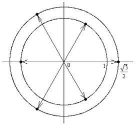

П 20.2 №32
Решите уравнение .
Решение:
Введём подстановку  . Получим
квадратное уравнение .
. Получим
квадратное уравнение .
. Получим
квадратное уравнение . По теореме Виета корни квадратного уравнения , и исходное уравнение распадается на
два более простых уравнения и , решения которых и дадут в совокупности
все решения данного уравнения. Если , то .
В тригонометрической форме ,
поэтому , или
, .
При .
При .
При .
Если , то .
В тригонометрической форме ,
поэтому , .
При .
При .
При
